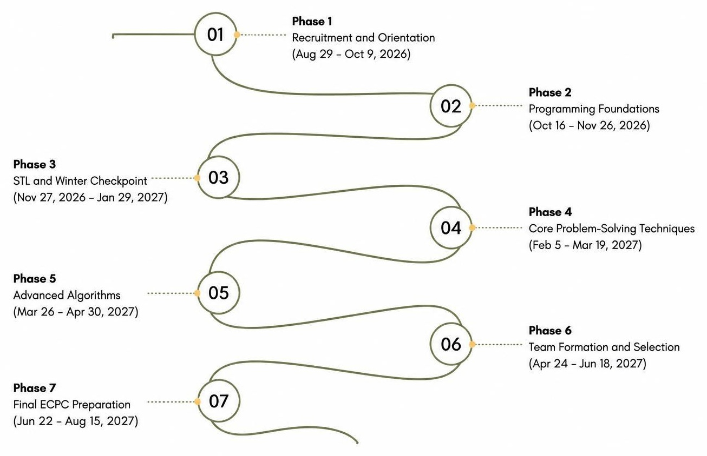

مجتمع ICPC HUE
جامعة حورس — مصر
جامعة حورس — مصر
14 · خارطة الموسم
منهج من 7 مراحل يأخذ الطالب من أساسيات البرمجة حتى اختيار الفرق والمنافسة في ECPC.

| المرحلة | الفترة | المحتوى التقني والمحطات الرئيسية |
|---|---|---|
| المرحلة 1: الاستقطاب والتعريف | 29 أغسطس – 9 أكتوبر 2026 | حملة التسويق في الجامعة، وفورم التقديم، والمقابلات، واليوم التعريفي، والسيشن الافتتاحية. |
| المرحلة 2: أساسيات البرمجة | 16 أكتوبر – 26 نوفمبر 2026 | المتغيرات، والتكرار، والمصفوفات، والنصوص، والدوال، والتعقيد الزمني (Big-O)، ومسابقات تدريبية أسبوعية. |
| المرحلة 3: STL ونقطة الشتاء | 27 نوفمبر 2026 – 29 يناير 2027 | vector وstack وqueue وset وmap وpriority_queue؛ مسابقة الإحماء: 29 يناير 2027 |
| المرحلة 4: تقنيات حل المسائل | 5 فبراير – 19 مارس 2027 | مصفوفات التكرار، والمؤشرين، والبحث الثنائي، والخوارزميات الجشعة، والاستدعاء الذاتي، والتراجع. |
| المرحلة 5: الخوارزميات المتقدمة | 26 مارس – 30 أبريل 2027 | الرياضيات 1 و2، والبرمجة الديناميكية 1 و2، وخوارزميات الرسوم البيانية 1. |
| المرحلة 6: تكوين الفرق والاختيار | 24 أبريل – 18 يونيو 2027 | تجارب الفرق الداخلية، ومسابقة الاختيار الرسمية (TSC)، وإعلان الفرق المعتمدة. |
| المرحلة 7: التجهيز النهائي لـ ECPC | 22 يونيو – 15 أغسطس 2027 | مسابقات أسبوعية مكثفة بنظام 5 ساعات، ومحاكاة كاملة للمسابقة، والهدف ECPC 2027. |
* ما لم يُذكر غير ذلك، تُقام السيشنات التقنية يوم الجمعة الساعة 8:30 مساءً. والمواعيد التقديرية تتغير حسب التقويم الأكاديمي الرسمي لجامعة حورس.